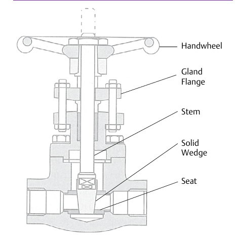

Gate Bodies — Solid-Wedge Construction

- 1Handwheel — manual on/off actuation; no throttling position
- 2Gland Flange — bolts down to compress the stem packing
- 3Stem — carries handwheel rotation down to the wedge
- 4Solid Wedge — the closure member; wedges into the seat for shutoff
- 5Seat — the sealing surface the wedge closes against
After Control Valve Handbook, 6th ed., Fig. 10.3 — used directly, own printed labels retained (Style Guide Sec 6.3). Component Index: cvh-cmp-solid-wedge-gate-valve.